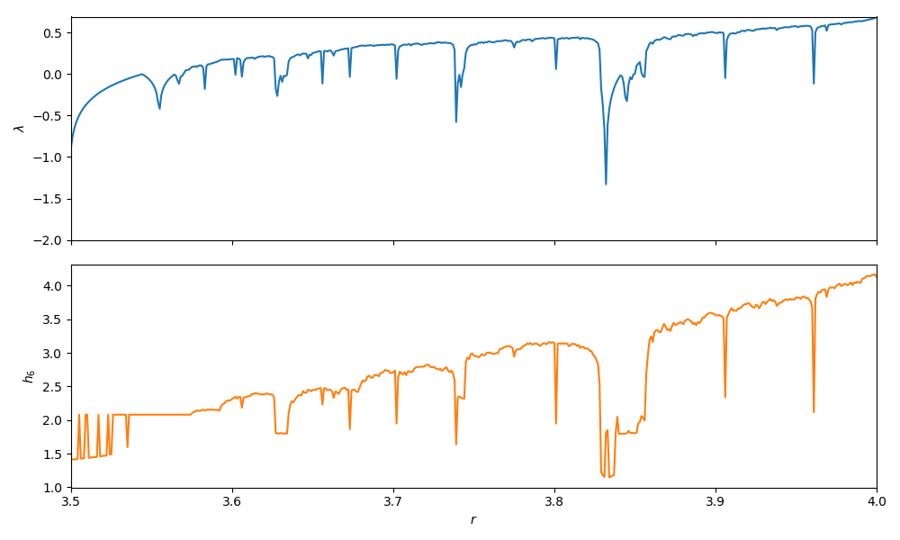

Entropies and Dimensions
Entropies
In the study of dynamical systems there are many quantities that identify as "entropy". Notice that these quantities are not the more commonly known thermodynamic ones, used in Statistical Physics. Rather, they are more like the to the entropies of information theory, which represents information contained within a dataset, or information about the dimensional scaling of a dataset.
Generalized Entropy
#
ChaosTools.genentropy — Function.
genentropy(α, ε, dataset::AbstractDataset; base = e)
Compute the α order generalized (Rényi) entropy [1] of a dataset, by first partitioning it into boxes of length ε using non0hist.
genentropy(α, p::AbstractArray; base = e)
Compute the entropy of an array p directly, assuming that p is sum-normalized.
Optionally use base for the logarithms.
Description
Let p be an array of probabilities (summing to 1). Then the Rényi entropy is
and generalizes other known entropies, like e.g. the information entropy (\alpha = 1, see [2]), the maximum entropy (\alpha=0, also known as Hartley entropy), or the correlation entropy (\alpha = 2, also known as collision entropy).
References
[1] : A. Rényi, Proceedings of the fourth Berkeley Symposium on Mathematics, Statistics and Probability, pp 547 (1960)
[2] : C. E. Shannon, Bell Systems Technical Journal 27, pp 379 (1948)
Basically, given a dataset you can partition it into boxes to calculate an entropy.
Worried about memory overflow? Don't be!
Partitioning the dataset (i.e. doing a histogram) is in general a costly operation that depends exponentially on the number of dimensions of the data and algebraically to the box size ε.
However, in this specific case the partition process has some special aspects that can be taken advantage of, reducing tremendously the memory allocation and spent time!
The function used internally by genentropy is non0hist:
#
ChaosTools.non0hist — Function.
non0hist(ε, dataset::AbstractDataset)
Partition a dataset into tabulated intervals (boxes) of size ε and return the sum-normalized histogram in an unordered 1D form, discarding all zero elements.
Performances Notes
This method has a linearithmic time complexity and a linear space complexity in length(data). This allows computation of entropies of high-dimensional datasets and with small box sizes ε without memory overflow.
Use e.g. fit(Histogram, ...) from StatsBase if you wish to keep information about the edges of the binning as well as the zero elements.
For example, the Shannon entropy of a coin-flip process should be one bit, by definition. Let's see...
using DynamicalSystems y = Float64.(rand(Bool, 1000000)) # just some coin tosses sh = genentropy(1, 0.1, y) # this is the shannon entropy isapprox(sh, log(2), rtol = 1e-4)
true
Because all entropies are by default calculated on base-e, the unit of measurement is "nat" and one bit is \log(2)\timesnat.
Permutation Entropy
The permutation entropy is introduced by C. Bandt and B. Pompe as a "A Natural Complexity Measure for Timeseries", which directly applies to arbitrary real-world data and is particularly useful in the presence of dynamical or observational noise.
#
ChaosTools.permentropy — Function.
permentropy(x::AbstractVector, order [, interval=1]; base = e)
Compute the permutation entropy [1] of given order from the x timeseries.
Optionally, interval can be specified to use x[t0:interval:t1] when calculating permutation of the sliding windows between t0 and t1 = t0 + interval * (order - 1).
Optionally use base for the logarithms.
References
[1] : C. Bandt, & B. Pompe, Phys. Rev. Lett. 88 (17), pp 174102 (2002)
For example, we will compute and compare the lyapunov exponent of the logistic map with the order-6 permutation entropy, like in the original paper.
using DynamicalSystems, PyPlot ds = Systems.logistic() rs = 3.5:0.001:4 ls = Float64[]; hs = Float64[] for r in rs ds.p[1] = r push!(ls, lyapunov(ds, 100000)) # For 1D systems `trajectory` returns a vector push!(hs, permentropy(trajectory(ds, 10000), 6)) end f = figure(figsize = (10,6)) a1 = subplot(211) plot(rs, ls); ylim(-2, log(2)); ylabel("\$\\lambda\$") a1[:axes][:get_xaxis]()[:set_ticklabels]([]) xlim(rs[1], rs[end]); a2 = subplot(212) plot(rs, hs; color = "C1"); ylabel("\$h_6\$") xlim(rs[1], rs[end]); xlabel("\$r\$") tight_layout()

Permutation Entropy performance
Even though the current implementation is fine and runs reasonably fast for moderate orders, it can get slow for high orders. Issue ChaosTools.jl#22 keeps track of this, and contains information on how to improve performance.
Attractor Dimension Estimation
There are numerous methods that one can use to calculate a so-called "dimension" of a dataset, like for example the Fractal dimension. This real number can offer a lot of information about the object that the dataset represents.
Generalized Dimensions
Based on the definition of the generalized entropy, one can calculate an appropriate dimension, called generalized dimension:
#
ChaosTools.generalized_dim — Function.
generalized_dim(α, dataset [, sizes]) -> D_α
Return the α order generalized dimension of the dataset, by calculating the genentropy for each ε ∈ sizes.
Description
The returned dimension is approximated by the (inverse) power law exponent of the scaling of the genentropy versus the box size ε, where ε ∈ sizes.
Calling this function performs a lot of automated steps:
- A vector of box sizes is decided by calling
sizes = estimate_boxsizes(dataset), ifsizesis not given. - For each element of
sizesthe appropriate entropy is calculated, throughd = genentropy.(α, sizes, dataset). Letx = -log.(sizes). - The curve
d(x)is decomposed into linear regions, usinglinear_regions(x, d). - The biggest linear region is chosen, and a fit for the slope of that region is performed using the function
linear_region. This slope is the return value ofgeneralized_dim.
By doing these steps one by one yourself, you can adjust the keyword arguments given to each of these function calls, refining the accuracy of the result.
The following aliases are provided:
- α = 0 :
boxcounting_dim,capacity_dim - α = 1 :
information_dim
Be wary when using generalized_dim
As stated clearly by the documentation string, calling generalized_dim performs a lot of automated steps by calling other functions (see below) with default arguments. It is actually more like a convenient bundle than an actual function and therefore you should be careful when considering the validity of the returned number.
#
ChaosTools.estimate_boxsizes — Function.
estimate_boxsizes(dataset::AbstractDataset; k::Int = 12, z = -1, w = 1)
Return k exponentially spaced values from 10^lower + w to 10^upper + z.
lower is the magnitude of the minimum pair-wise distance between datapoints while upper is the magnitude of the maximum difference between greatest and smallest number among each timeseries.
"Magnitude" here stands for order of magnitude, i.e. round(log10(x)).
#
ChaosTools.linear_regions — Function.
linear_regions(x, y; dxi::Int = 1, tol = 0.2) -> (lrs, tangents)
Identify regions where the curve y(x) is linear, by scanning the x-axis every dxi indices (e.g. at x[1] to x[5], x[5] to x[10], x[10] to x[15] and so on if dxi=5).
If the slope (calculated using LsqFit) of a region of width dxi is approximatelly equal to that of the previous region, within tolerance tol, then these two regions belong to the same linear region.
Return the indices of x that correspond to linear regions, lrs, and the approximated tangents at each region. lrs is a vector of Int.
A function plot_linear_regions visualizes the result of using this linear_regions (requires PyPlot).
#
ChaosTools.linear_region — Function.
linear_region(x, y; dxi::Int = 1, tol = 0.2) -> ([ind1, ind2], slope)
Call linear_regions, identify the largest linear region and approximate the slope of the entire region using linreg. Return the indices where the region starts and stops (x[ind1:ind2]) as well as the approximated slope.
Example
For example, the dimension of the strange attractor of the Hénon map is:
using DynamicalSystems hen = Systems.henon() ts = trajectory(hen, 1000000) D_hen = information_dim(ts)
1.2279316105815665
As a side note, be sure that you have enough data points, otherwise the values you will get will never be correct, as is demonstrated by J.-P. Eckmann and D. Ruelle (see Physica D 56, pp 185-187 (1992)).
Kaplan-Yorke Dimension
#
ChaosTools.kaplanyorke_dim — Function.
kaplanyorke_dim(lyapunovs::AbstractVector)
Calculate the Kaplan-Yorke dimension, a.k.a. Lyapunov dimension [1].
Description
The Kaplan-Yorke dimension is simply the point where cumsum(lyapunovs) becomes zero (interpolated). If the sum of the exponents never becomes negative the function will return the length of the input vector.
Useful in combination with lyapunovs.
References
[1] : J. Kaplan & J. Yorke, Chaotic behavior of multidimensional difference equations, Lecture Notes in Mathematics vol. 730, Springer (1979)
Notice that calling this function requires you to pass the Lyapunov exponents in an ordered vector form (largest to smallest). Example:
using DynamicalSystems hen = Systems.henon() D_kp = kaplanyorke_dim(lyapunovs(hen, 100000))
1.2587047903582491